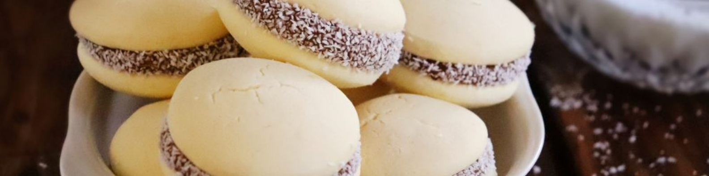
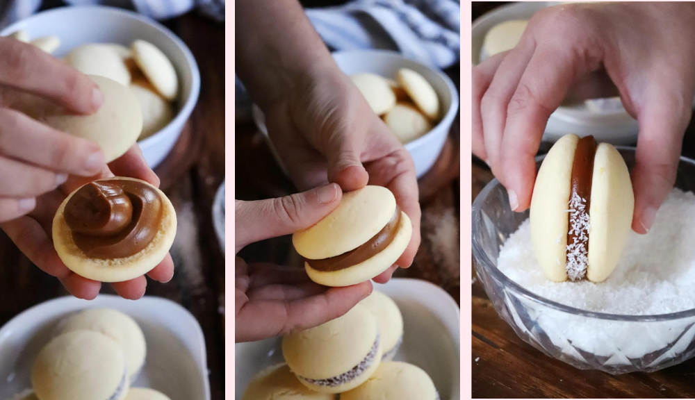
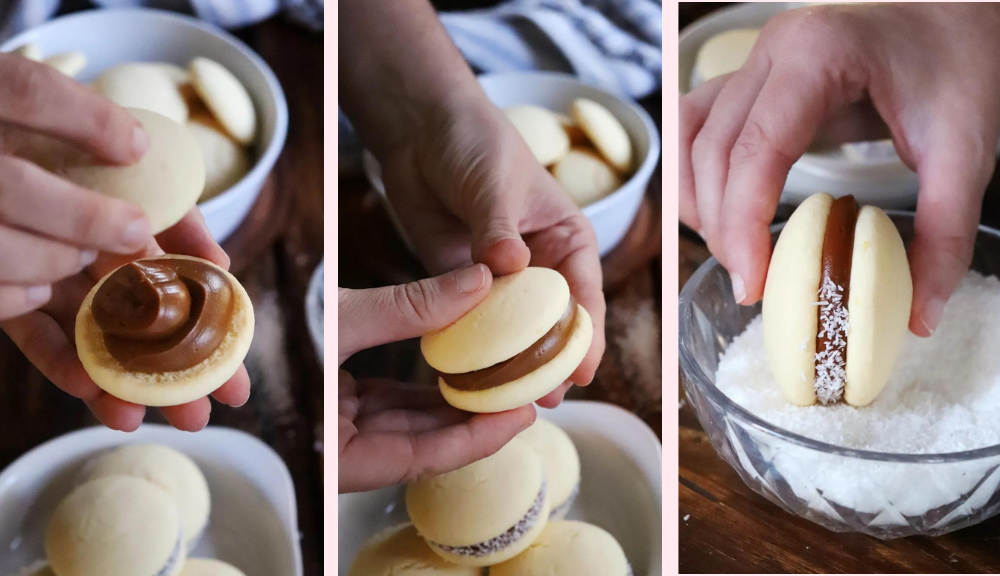
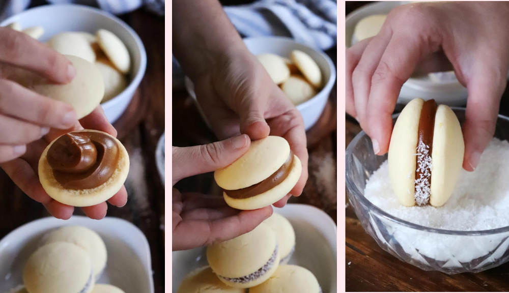

 

Alfajores de Maicena
Clásicos, tradicionales y deliciosos Alfajores de Maicena rellenos con Dulce de Leche!
Ingredientes.
- Manteca 100 Gr. (Mantequilla)
- Harina de Trigo 0000 100 Gr.
- Maicena 200 Gr. (Almidón de Maíz)
- Azúcar Impalpable 100 Gr. (Glas)
- Huevo 2 u.
- Polvo de Hornear 10 Gr.
- Esencia de Vainilla 1 Cda.
- Cognac 1 Cda. (opcional)
- Ralladura de Medio Limón
- Pizca de Sal
Para el relleno
- Dulce de Leche 400 Gr.
- Coco Rallado c/n
Rinde 20 Alfajores de Maicena con Dulce de Leche, para disfrutarlos en el desayuno, merienda, de postre o simplemente cuando haya ganas de algo dulce!!
Procedimiento.
- En un bowl, colocar la Manteca (pomada) junto con el Azúcar Impalpable y batir hasta que se vuelva una crema.
- Agregar los Huevos y batir para incorporar.
- Agregar el Cognac, Esencia de Vainilla, la Ralladura de Limón y batir nuevamente para incorporar.
- El Cognac es opcional pero le aporta un rico sabor a la masa. También se puede reemplazar por un licor o whisky>
- Agregar de a poco todos los ingredientes “secos”, Harina, Maicena, Polvo de Hornear y Sal. En lo posible utilizar un Tamiz para poder incorporarlos mas fácil y evitar grumos.
- Mezclar bien hasta incorporarlos ingredientes y formar una masa.
- Envolver la masa con film y refrigerar por 30 minutos aproximadamente. La masa debe enfriarse para poder trabajarla más fácil.
- Espolvorear un poco de harina sobre la mesada y sobre la masa, luego con la ayuda de un palo estirar la masa hasta lograr un espesor de aproximadamente 5 milímetros.
- Con un cortante de 5cm de diámetro, cortar círculos de masa y colocarlos sobre una fuente para horno.
- Precalentar el horno a 180ºC.
- Hornear durante 5 a 8 minutos a temperatura media 180ºC. Las “tapitas” no se deben dorar, tiene que estar cocidas pero blancas.
- Es normal que en la superficie se hagan algunas grietas durante la cocción.
- Retirar del horno y dejar enfriar.
Cómo armar los Alfajores de Maicena.
Colocar el Dulce de Leche (en lo posible tipo “repostero” porque tiene mayor consistencia) en una manga pastelera, cubrir el interior de una “tapa” con Dulce de Leche (ni mucho, ni poco, más o menos debe tener el mismo espesor de la tapa). Colocar otra tapa encima y hacer un poco de presión para emparejar.
Luego, pasar los bordes del alfajor por Coco Rallado hasta que quede bien cubierto.
La manga se puede reemplazar por una bolsa dura (y limpia!) o directamente utilizar una cuchara.
Listo!! Ya están armados nuestros Alfajores de Maicena para disfrutarlos como corresponde!!
